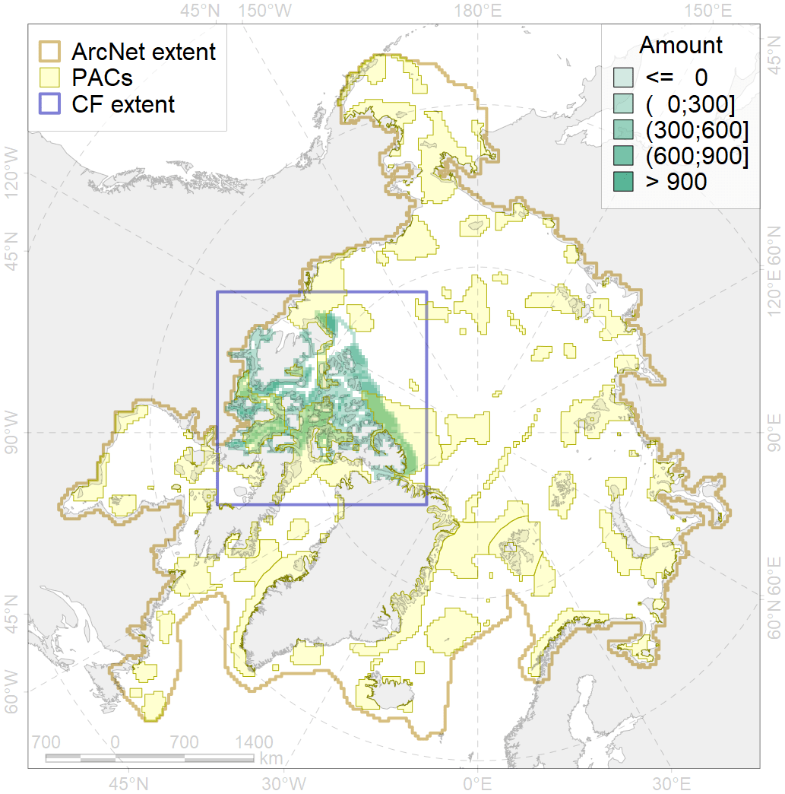
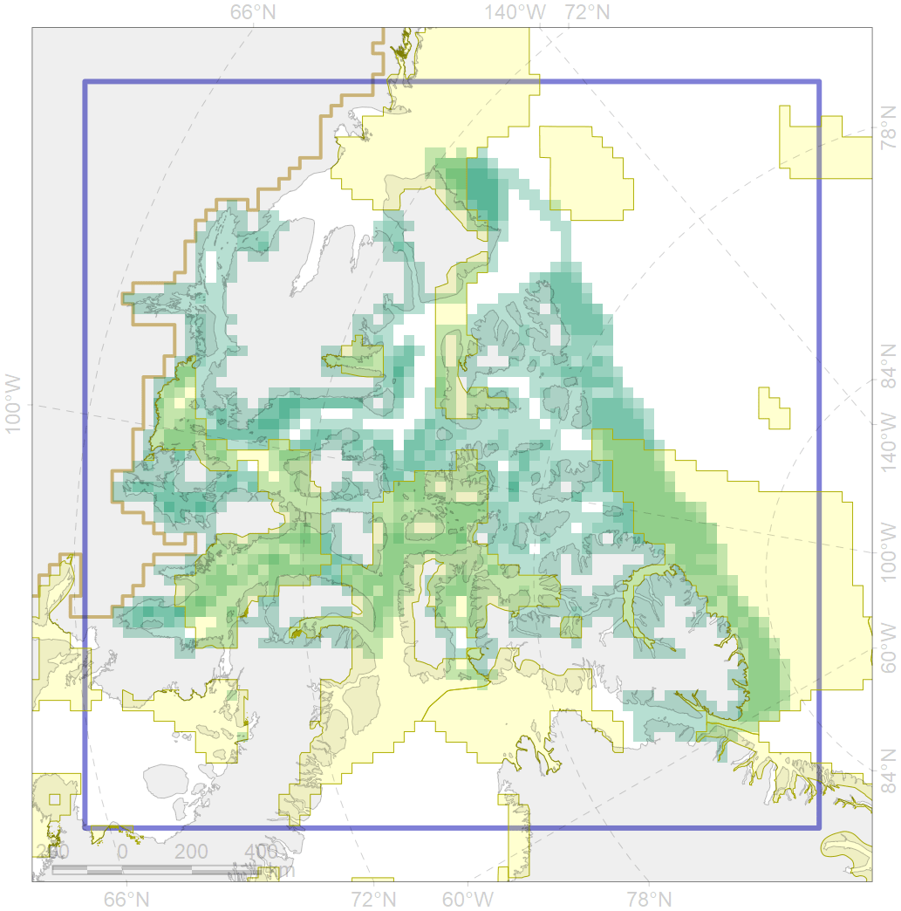

7133

| CF code | 7133 |
| CF name | III.1. Canadian Arctic Archipelago shelf and margin |
| Time Period | At least last 100 years |
| Source(s) | Harris et al., 2014; Carmack, Wassmann, 2006 |
| Seasonality | 1-12 |
| Depth Horizon | Sea floor |
| Methodology | Data obtained from the literature |
| Use Restrictions | Open access |
| Author Name | V. Spiridonov, W. Merritt |
| Notes | |
| Scenario’s Target | 0.04166645 |
| Target Achievement | 0.478 (Scenario: 1148.4%) |
| PAC | Share of the Total Amount within the PAC | Share of the Target Achievement for the ArcNet | PAC’s Contribution to the Target Achievement |
|---|---|---|---|
| 33 | 0.2%0.3% | 5.0%8.2% | 0.4%0.7% |
| 51 | 0.1%0.3% | 0.9%6.7% | 0.1%0.6% |
| 52 | 13.1%13.3% | 300.7%304.8% | 26.2%26.5% |
| 53 | 0.1%0.1% | 1.8%1.9% | 0.2%0.2% |
| 54 | 18.1%18.7% | 433.7%448.9% | 37.8%39.1% |
| 59 | 0.0%0.0% | 0.0%0.0% | 0.0%0.0% |
| 62 | 1.8%1.8% | 36.9%36.9% | 3.2%3.2% |
| 63 | 1.1%1.2% | 23.3%24.3% | 2.0%2.1% |
| 64 | 0.5%0.5% | 7.8%8.2% | 0.7%0.7% |
| 65 | 11.7%12.1% | 243.0%251.4% | 21.2%21.9% |
| 66 | 0.0%0.0% | 0.0%0.0% | 0.0%0.0% |
| inner | 46.7%48.4% | 1053.3%1091.2% | 91.7%95.0% |
| outer | 53.3%59.7% | 95.1%235.3% | 8.3%20.5% |
| † supplement values are for area consistence whereas principal values are for Accenter compatible gridded stats |